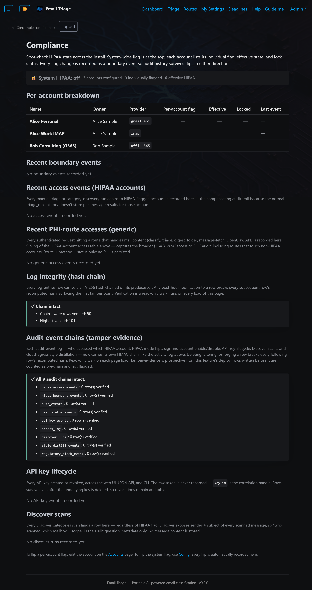

Email content never leaves your network. By default. Always. By design.
Sovereign AI in Email Triage
Sovereign AI is implemented at three levels of the stack — each strictly stronger than the last.
Default Ollama backend on your own GPU host. Qwen / Llama / Mistral families supported. Email content never traverses a third-party API. No SOC 2 boundary to argue about. No data-processing addendum to negotiate. The classifier is yours.
Operators with BAA coverage (OpenAI, Gemini, OpenAI-compatible) can configure cloud classification. The BAA gate is enforced in code, not policy. HIPAA-flagged messages skip cloud routing until the operator records BAA acknowledgment in the audit log. The compliance officer's question — "what stops PHI from going to OpenAI?" — has a code-level answer.
The RAG path (sent-mail context for drafted replies) is hard-coded to local-only — ollama, in-process sentence-transformers, and a fallback composite. A static privacy-invariant test fails the build if anyone tries to add a non-local backend here. Drafted-reply context is higher-volume PHI exposure than per-message classification; the allowlist forecloses cloud embedding entirely.
HIPAA Mode
Sender, subject, body, and classification reasoning are redacted from system logs. The [redacted] token replaces these fields in every log line.
A test suite runs on every build that greps the production source for forbidden field references in log calls. Any new code that would log a sensitive field fails the test before merge.
SMS / push notifications include category and timestamp only. Never the sender, subject, or body content.
The daily-digest feature refuses to send if the configured to-address doesn't match the account owner. Protects against accidentally cc'ing PHI to the wrong stakeholder.
The classification cache is disabled by default for HIPAA-flagged accounts. The cost (re-classifying repeats) buys the audit posture (no PHI in a side-cache).
Every login, account view, credential use, and security-relevant event is written into an append-only HMAC-SHA256 keyed hash chain — each row cryptographically linked to the one before it. As of v0.2.0 the chain spans 8 audit-event tables plus a per-request PHI-access log. Because it is keyed (not a plain SHA-256 hash), an attacker can't recompute a valid chain after editing a past row; it survives master-key rotation and fails closed — with no key present, a chained write is refused rather than downgraded to a secretless hash. Any alteration is detectable in seconds via the email-triage audit verify CLI or the paginated /compliance review surface.

/compliance — HIPAA mode, audit-chain status, BAA acknowledgments, TLS certificate lifecycle
Supply Chain Security
Sovereign AI ends at the model boundary if the runtime itself isn't trustworthy. Email Triage publishes a verifiable supply chain so compliance officers can answer "where did this binary come from?" with a cryptographic chain instead of a vendor email.
Every published container image is signed with cosign using keyless OIDC against the GitHub Actions identity. No long-lived signing key to lose or rotate. Operators verify with cosign verify before pull.
Each image carries a SLSA-3 build provenance attestation: who built it, when, from which source revision, in which builder. Proves the image came out of the public CI pipeline running against the public source — not a one-off developer laptop build.
A separate human-validated review event signed against the same digest (predicate operator-approval/v1). Distinguishes "the CI passed" from "an operator reviewed and approved this release."
HIPAA-flagged installs verify both attestations on the same image digest before allowing pull. A poisoned CI run with no operator attestation can't reach a HIPAA host. Verification recipe in the public repo's docs/install.md.
Air-gap installs use scripts/download-embedding-bits.sh on a connected machine to produce a hash-pinned tarball + SHA-256 sidecar. Sideload through the admin UI runs the same hash verification as the auto-download path — operator-staged bytes are not trusted.
Customers pin to immutable vX.Y.Z tags (same digest under both vX.Y.Z and X.Y.Z forms). Float to X.Y, X, or :latest for development-friendly upgrades. :edge for every push to main.
Source: github.com/Unlimited-Data-Works-LLC/Email-Triage · Image: ghcr.io/unlimited-data-works-llc/email-triage · License: Apache 2.0
Encryption at Rest
Layer 1 — whole-database encryption (SQLCipher). The entire database file — emails, classifications, accounts, audit logs, and credentials — is AES-256 encrypted on disk (single-file SQLCipher: AES-256-CBC with HMAC-SHA512 page integrity). Encryption at rest is on by default for new installs as of v0.2.0. The storage key is HKDF-SHA256–derived from your master key, and every connection — live, backup, and migration — opens through one encryption-aware path, so no code path can quietly write a plaintext copy.
Fail-closed boot. If encryption is required (HIPAA mode) or requested but the SQLCipher library or master key is missing, the application refuses to start rather than silently falling back to plaintext. A HIPAA install that hasn’t requested encryption is loudly advised, not silently downgraded — disk-level LUKS is a documented equivalent.
Layer 2 — secrets encrypted again, inside the encrypted database. Provider passwords, OAuth refresh tokens, and other secrets are additionally encrypted with Fernet (AES-128-CBC + HMAC-SHA256). One master key powers both layers — it directly unlocks the Fernet secrets and, via HKDF, derives the SQLCipher storage key — and it is held outside the database. Storage options for that master key:
Backing up the database without also backing up the master key leaves it unrecoverable — a safety property for off-site backup storage.
Multi-Tenancy & Delegation
The user model supports three roles with distinct audit semantics:
Delegate actions are stamped with both the actor and the account-owner in the audit log. The HIPAA §164.312(b) audit gate distinguishes owner self-access from delegate access — the former is a §164.502(a) self-disclosure carve-out and isn't audited as PHI access; the latter is and writes an audit row every time.
Standards Honored
| Standard | Application |
|---|---|
| RFC 5322 | Internet Message Format. Parsing inbound mail, writing outbound headers with proper In-Reply-To threading. |
| RFC 6154 | IMAP SPECIAL-USE flag. Drafts / Sent folder auto-discovery via \Drafts / \Sent markers. |
| RFC 5545 | iCalendar. Parsing .ics payloads on incoming meeting invites. |
| RFC 5546 | iMIP. Invite-acceptance / decline / tentative drafted as METHOD=REPLY with proper threading. |
| HIPAA §164.312(b) | Technical Safeguards — Audit Controls. Hash-chained audit log; CLI verifier. |
| HIPAA §164.312(e)(1) | Transmission Security. TLS posture, certificate lifecycle. |
| HIPAA §164.502(a) | Self-Disclosure carve-out. Audit gate avoids spurious "PHI access" rows on owner self-access. |
| HIPAA §164.502(b) | Minimum-necessary. Delegate-vs-owner gating, metadata-only notifications, and PHI-locked alerting limit exposure by construction. |
| HIPAA §164.528 | Accounting of disclosures. The tamper-evident HMAC access-event chain is built to support the disclosure record. |
| HIPAA §164.402(2) | Breach safe-harbor. Encryption at rest renders lost or stolen PHI unusable — outside the reportable-breach definition. |
| NERC CIP-007-R4 | Logging and Monitoring. Audit-log shape informed by CIP-007. |
What self-hosting wins you. Because Email Triage runs on your own infrastructure and classifies with a local model by default, PHI never leaves your network — no outside AI vendor receives it, so no BAA with a cloud AI vendor is required. If you deliberately enable a cloud backend, the code-enforced BAA gate blocks PHI from reaching it until you record that specific vendor’s BAA. Encryption at rest puts unreadable PHI inside the §164.402(2) breach safe-harbor; the HMAC audit chain is built to support a §164.528 accounting of disclosures; and delegate-vs-owner gating plus PHI-locked alerting keep access minimum-necessary by construction.
Honest scope. These are engineering controls aligned to the cited rules — not a certification, and not legal advice. Email Triage is a technical tool that helps you meet your obligations; it does not by itself make an organization HIPAA- or 21 CFR Part 11–compliant. Compliance is a program you own: your policies, your BAAs with other vendors, your validation and your attestations. The cryptographic attestations described here prove an image’s provenance, not your regulatory posture. Confirm applicability with your own compliance counsel.
Beyond Email
Email Triage is one application of sovereign AI patterns. The same approach — local-by-default LLM, code-enforced compliance gates, audit-ready architecture — applies to any AI initiative in a regulated environment. I help organizations design and implement sovereign AI strategy across their stack.